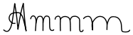
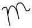
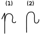

Беседа 3113 от 3877 · Беинса Дуно
Хубавата страна
Сряда, 5 ч сутринта
(Небето облачно. Времето тихо и студено.
През нощта прехвърча сняг.)
„Отче наш“
„В начало бе Словото“
„Махар Бену Аба“
Представете си, че вие отидете в странство, научите един език, но няма кому да говорите. В годината само веднъж се случва да говорите на този език. И след 10–15 години вие ще изгубите своя навик.
Най-първо може да се зададе въпрос: какъв е смисълът на живота? Ако котката си зададе въпрос какъв е смисълът на нейния живот, как ще си отговори? Най-първо тя не може да си отговори на въпроса. Или ако една птица си зададе този въпрос, как ще си отговори? И тя не може да си отговори на въпроса. Тя ще си отговори на този въпрос така: „Аз съм родена, за да хвъркам.“ Но ако през целия си живот човек хвърка, какво ще постигне? Или ако рибата си зададе въпрос: „За какво съм родена?“, ще си каже: „Аз съм родена да плувам.“ Но ако през целия си живот плува, какво ще постигне? Или някой религиозен казва: „Да ходя в църква.“ Но ако през целия си живот, сутрин, обед и вечер, ходи в църква, какво ще придобие от църквата? Или ако попита някой защо се родил човек. Той може би да си отговори така: за да се облича по три пъти на ден с разни костюми. Ако прави това, какво ще добие? Все ще добие нещо.
Казвам: Хората са дошли на едно място, че те си задават задачи според степента на своето развитие. Търговецът казва: „Смисълът на моя живот е да бъда търговец: да купувам и да продавам.“ Банкеринът казва: „Аз съм роден, за да обменям пари: да давам назаем и да вземам това, което съм дал.“ И в края на краищата от всички професии, които съществуват, като теглим един баланс, какво придобиват хората? Търговецът в края на краищата до известна степен забогатява, забогатява и после осиромашава.
Трябва да се преведат нещата. Имате събиране и изваждане, плюс и минус. Да даваш и да вземаш. Или да изваждаш и да събираш. Какво нещо е изваждане и какво събиране? Какво значи думата „събиране“? Човек трябва да си зададе този въпрос. Някой казва: „Аз трябва да събирам.“ Какво ще събираш? Много работи можеш да събираш: трески, пясък, съдрани книжки, съдрани дрехи и прочее. Някой казва: „Ние да се събираме.“ Хубаво, като се събират двама души, какво ще направят? Или казва някой: „Да изваждаме.“ Какво трябва да изваждаме? Нали някой път някой казва: „Да извадим дрехите от коритото.“ Но дрехите, като се извадят от коритото, може да са опрани добре, а може да не са опрани. След като се извадят от коритото, дрехите добиват ли нещо? Дрехите, като се турят в коритото, ти събираш дрехите с коритото. И след като си правил един дълъг процес, какво е спечелила ризата? Тя е изгубила нещо ценно. Тя е изгубила своя тор. Наториш нивата. Хубавото на ризата отишло навън. Тази риза е седяла при някой учен човек. Той може да я е носил цяла година, нямало кой да я пере. И тя е придобила всички научни работи, всичкият научен магнетизъм е влязъл вътре и сега, като [я] опереш, измиваш всичкия магнетизъм. Ако ти вземеш ризата на един светия, знаете ли какво ще стане? Ти искаш да я очистиш. Той като не я е очистил, ти ще я очистиш!
Често ние постъпваме неразумно. Например, ако вземе един начернена книга и я пречисти, и ако изтърка всичко, каквото е написано, питам: Какво ще добие книгата?
Сега, някой път човек е малко сприхав. Казват: „Да стане мек.“ Че, ти ако му премахнеш неговата сприхавост, знаете ли какво ще излезе? Някой път аз разсъждавам. Пътят, по който върви мисълта ми, не е много трезвен. Да кажем, че имаш един кон, който работи. Но има навик да хапе. И най-после казваш ти: „Ти много си го охранил. И затова, я го дръж гладен, цяла година му давай само слама, без зоб.“ Ще почнат да му се четат ребрата. И няма да рита и хапе. Много добър ще стане. Отличен кон, но едва ще се клати. Казваш: „Избави се той от един лош навик.“ Но този кон за работа вече не го бива. Та, ако конят стане кротък и не хапе, той и не работи вече. Предназначението му е, като се впрегне в каруцата, да тегли последната. По-добре да я тегли и да хапе и рита, отколкото да не рита и да не хапе, и да не тегли. Това е от практично гледище.
После, слушам мнозина да казват: „Ние ще живеем добре.“ Хубаво, как трябва сега да се живее добре? Казват: „Че ти целия ден ходиш.“ Ходенето е живеене добре. „Ние не сме справедливи“ – казваш. Как не сте справедливи? Целия ден работиш с ръцете си, вземаш нещо, разместваш нещо: чинии, паници, дърва, нареждаш с ръцете си. На всяко дърво му даваш място. И на всяка риза, шапка и прочее. Казваш: „Отлично е наредена тая къща, всяко нещо е турено на мястото си.“ Какво му липсва? Казват: „Не живееш добре.“ Има един вътрешен процес. Отвън може човек да бъде справедлив във физическия свят, но в сърцето не е справедлив. Това подразбира, че всяко чувство не е на мястото си. Или не е справедлив в мислите си. Ако той не е справедлив, трябва да се знае къде е несправедливостта: в сърцето си или в ума си.
Да допуснем, че двама души спорят. Казват: „Вие обичате някого повече.“ Че, какво лошо има, ако вие обичате някого повече? Казват: „Той еди-кого си обича повече.“ Какво лошо има в това? Ако майката обича повече детето си, какво лошо има в това? Че, коя птичка не обича своите деца повече? Казват: „Трябва да обичаме всички!“ Тая идея – да обичаме всички – е идея неразбрана. Вие правили ли сте някой път опит да обичате всички? Най-първо, ти не можеш да мислиш за всички. Представлявали ли сте [си] вие да обичате всички хора? Да услужваш на всеки един човек от един милион души. Представи си, че си един слуга и на един милион души трябва да услужиш, да им дадеш храна сутрин, за обяд и за вечеря. Какво ще стане с тебе, ако така правиш една година? Ако сравниш такава работа с праха, ще кажеш: „От този прах да се освободя.“
Ние не разбираме идеята на израза: „Да обичаме всички.“ Тази е идея за Бога, не е наша идея. С това само констатираме, че Бог обича всички. И казваме някой път: „Какво представлява Бог да обича всички?“ Той, като стане, веднага е промислил за всичко онова, което е създал, което е живо, което има съзнание. Бог мисли за тях. Бог е промислил за тях.
Да кажем, че някому са услужили сутринта, дали са му закуска. И ако аз го викам да му дам закуска, питам: моята закуска на място ли е? Ако дойде между вас един, когото вие всички обичате, и искате сутрин да му дадете закуска, можете ли всички да задоволите вашето желание? Ти казваш: „Друго време няма. А само сутринта.“ Вие сте 200–300 души. Може ли да задоволи той вашето желание да дойде на закуска едновременно на 200–300 души? Това е невъзможно!
За някого казват: „Той пее, като ходи.“ Че, кой не пее? Ти постоянно пееш. Въздухът излиза навън – пееш. И някой път, като си пял, не ти харесват пеенето. Като си работил, не ти харесват това пеене. Работата е пеенето. За да пееш, трябва да чуваш нещо. Всичко онова, което ти чуваш, е пеене. Под пение ние разбираме специфичното пение. В какво седи специфичното пение? Трябва да се направи един опит. Децата пеят повече, а старите по-малко. Когато щурците пеят пролетно време, какво показва това? Защо пеят щурците? И зимно време защо мълчат? Лятно време са млади, а зимно време са стари.
Какво означават тези два знака – на умножение и деление? Всеки от вас е делил, но знаете ли колко мъчно е да разделиш? Някой път и съдията дели. Някой път онзи, възлюбления, който е направил погрешка, съдията го раздели от майка му – осъди го на 4[–]5 месеца затвор. Всякой път умножавате. Имате два вида умножение. Можеш да умножиш добродетелите си, а може да умножиш погрешките си; можеш да умножиш придобивките си, а можеш да умножиш загубите си. Това е все умножение.
Какъв е процесът при придобиването? Отваряш раницата и туряш в нея нещо. Отиваш на екскурзия. Туриш в раницата три ризи, предполагаш, че по тоя път ще се изпотиш. Може да е лятно време, когато има 25–30 градуса топлина. Но зимно време, когато има 25–30 градуса студ, питам: като туриш трите ризи, ще се изпотиш ли?
Сега ще преведете какво означава изпотяването. В едно отношение да се изпотите [е] добро. А пък [в] другото отношение е лошо. В известен случай, ако се изпотиш, чрез потта се отварят порите на тялото – кожата диша. И тези нечистотии се изхвърлят навънка. Но чрез изпотяването голяма част от твоята нормална телесна топлина се намалява, става свиване на капилярните съдове, кръвообращението не става правилно. Човек се простудява и веднага почва да усеща тръпки. При изпотяването голяма част от топлината се губи. Какво трябва да правиш? И ако изпиеш една–две чаши студена вода, съвсем ще загазиш. Какво трябва да се прави? Изисква се пиене на топла вода, за да възстановиш нормалната топлина. Това е във физическия свят.
Едно такова изстиване често става и в духовния или в умствения свят. Ако обикнеш един човек, ти ще се изпотиш. И ако ти се изпотиш и не пиеш топла вода, ще боледуваш после. Нали сте боледували от любов? Обикнеш някого и изстинеш.
Разправяше ми една млада мома една опитност. Тя казва: „Аз си бях свободна. Един ден срещнах един момък, който ми се харесваше. Най-първо си гугуцахме сладко – приятно ми беше. Един ден стана нещо, като че се завързахме. И само един ден бях щастлива. Един ден знаех какво нещо е любовта.“ Сега, аз не зная какво е чувствувала тя, но привеждам думите ѝ. Класическият език е любовта. Тя казваше: „Един ден бях щастлива и две години бях в ада. Две години се мъчих като някой вол.“ Значи тя е била един ден щастлива и две години в мъчение. Две години колко дни има? 730 дни. От тези дни ще извадите единия щастлив ден; ще извадите два дена, ще извадим всяка година по един щастлив ден. Остават 728 дена да се мъчиш. Питам сега: Струват ли си два дена при толкова дни мъчение? Но в какво седяло мъчението? Аз си го предполагам, въображавам си го. Онзи, когото обичаш, те покани на гости и ти даде отличен, богат обяд, с всичките му плодове, сутринта, на обед и вечерта. На другия ден като дойде, кара те да ядеш сух хляб, мухлясал. Кара те една цяла година да ядеш сух хляб. И казва: „Нали ме обичаш – сух хляб ще ядеш; нали ме обичаш – суха пастърма ще ядеш, нали ме обичаш“, ти това, ти онова. Тук е пресилена работата малко. Не е съвсем така.
Светът на любовта е свят на големи страдания. Всички искате любовта. Много учен трябва да бъдеш, много добър. Любовта е за най-силните хора. Това не е нещо за всякого. Детето не обича майката. Казват, че децата са доволни. Ни най-малко не са доволни децата. Майката, като силна, никога не пита детето. Съблекат детето и го турят в коритото с топла вода. Детето се уплаши от топлата вода и плаче. Тя търка и то плаче. Извади го навън, обвие го с пелени и го повърдаля. То плаче. И майка му му казва: „Ще мълчиш, аз те обичам.“ Детето казва: „Изкарай ме малко по-рано от коритото.“ Майката не го пита. Тя казва: „Трябва да изкъпя това дете.“ Детето мисли, че е минало през един изпит. И казва: „Моля, мамо, още веднъж да не ме туриш в коритото.“ На другата сутрин майката пак тури детето в коритото и пак го търка. То пак я погледне и казва: „Моля ти се, ще бъдеш така добра да не ме туряш в тази вода. Тя ме плаши.“ Майката казва: „Трябва да е болно това дете.“ На другия ден – пак в коритото. Всички деца плачат. Може би вие сте имали някои деца, които да не плачат. След като го къпят детето една–две години, някой път детето се разположи и цапа във водата. Нали има и такова нещо. Предполагам. В дадения случай майката има една идея, че трябва да се окъпе това дете, че порите му трябва да бъдат отворени и да бъде детето чисто. Но детето не разбира тази философия. Майката казва: „Ти отпосле ще разбереш.“
Та казвам: Това е аналогия. Когато човек влезе в духовния свят, има такова корито. Майката ще те къпе. Като дойде бащата, и той ще те къпе. После, ако имаш и по-голям брат, и той ще те окъпе. По-голямата сестра, и тя ще те окъпе. На физическото поле има едно къпане, а пък там всяка сутрин има четири къпания.
Ето пример за къпане. Ще дойде някой и ще ти каже: „Ти не живееш добре.“ Ти ще влезеш в коритото и той ще почне да те къпе. Тъкмо излезеш и друг ще дойде и ще каже същото – пак ще те тури в коритото. Ще те тури и ще те разтрива. Две години четирима души всяка сутрин ще те разтриват.
Разправяше ми един: „Отидох веднъж в една баня. Казаха ми по-рано: „Като отидеш на баня, ще хванеш един теляк, да те изтрие хубаво.“ Отидох при един теляк. Иде един манафин – теляк. Носи една дебела отривалка от козина. Аз съм българин, а пък той турчин. Той търка. Казвам му: „Ще ми одереш гърба.“ Той казва: „Какво казваш, ефендим?“ Той ме натиска още повече. Казвам му: „Ти не разбираш български. Така не се трие.“ Той трие навсякъде. Намерих си беля на главата. Виждам, че човекът иска да направи добро, но неприятно ми е това триене.“
Та казвам: В сегашния живот ние се намираме при такива теляци. Ние говорим на един език, а той не разбира. Той говори на друг език. Той натиска с кесията и търка. Ти видиш един човек и му казваш: „Ти не постъпваш добре.“ Някой е писал, ти му казваш: „Не пишеш хубаво.“ Някой пише така: 
Всяко нещо трябва да бъде хубаво направено. 

Ние искаме да живеем един добър живот. Добрият живот се отнася до краката. Искаме да бъдем справедливи. Това има отношение с нашите ръце: всякога да разпределяме нещата справедливо.
Ти трябва да слушаш и трябва да се научиш, когато ти говорят всички хора, да ги разбереш и на всеки човек да дадеш съответно на това, което иска от тебе. Ти трябва да се научиш да гледаш и като гледаш един човек, да оцениш кое е хубавото в него. И да вземеш от него нещо, и да му дадеш нещо. Трябва да научиш изкуството на яденето. Ако един ти дава плодове от своята градина, ти ще вкусиш от тях и ще познаеш до известна степен какъв е този човек. Следователно в яденето ние опитваме доколко той е благ. Като ядем всички плодове, ние се запознаваме с Бога чрез онова, което Той е направил. Ти ядеш ябълки, круши, пшеничен хляб, сладкиши. Чрез всичко това ще опиташ Божията благост. И ако ти ядеш както трябва, ако влизаш в света на тая храна и разбираш езика ѝ, ако разбираш това Божествено ядене, ти ще бъдеш здрав. Иначе ще боледуваш. И боледуването произтича от това, че не сме разбрали яденето: ядеш и не си доволен.
Или слушаш и не си доволен от слушането. Ти, като слушаш, трябва да бъдеш доволен от това, което ти се говори. Господ ти говори чрез вятъра и ти не си доволен. Той ти говори и ти не го разбираш. Хубаво ти говори, а пък ти казваш: „Дано да престане този вятър.“ Хубаво, престане вятърът. Грее слънце. Ако ти не разбираш защо грее Слънцето, защо духа вятърът, защо цъфтят цветята и текат реките; ти ако не разбираш смисъла на живота, какво си разбрал? „Аз искам да бъда щастлив човек“ – казваш ти. Ти можеш да бъдеш щастлив, ако ходиш, ако работиш, ако гледаш, ако слушаш, ако възприемаш уханието на цветята, като ядеш. Всичко това е външната страна. И можеш да бъдеш щастлив, като мислиш добре, като чувствуваш добре и като постъпваш добре. Мисленето спада към един особен свят, чувствуването – към друг свят и постъпките – към друг свят.
Та казвам: При сегашните условия трябва да се даде съвсем друга насока на живота. Ти сам трябва да си дадеш тази насока. Никой не може да те научи как да живееш добре.
Вие сте правили опити. Имали сте деца. Тук имаме доста майки и бащи. Вашите деца, които сте отглеждали, щастливи ли са? И ако не са щастливи, къде е причината? Болният човек може ли да даде здраве? Двама души са болни и ще искат услуга един от други. Болен на болния какво може да помогне? Двама болни могат да си приказват сладко. Единият ще разправи своите патила. И казва: „Остави се, имам тази болка в крака си. Свива ме.“ Другият казва: „Имам нещо в корема и ме гърчи.“ Мен коремът и кракът не ме болят и се чудя какво го свива в крака или корема? Чудя се какво нещо е това болка. Казват: „Да не ти дава Господ такива работи!“
Аз посетих един български свещеник. Беше го заболял коремът. Този човек седна на колене и почна да рита на земята. И се върти. „Гимнастика ли правиш?“ – го питам. „Каква гимнастика, пъпът ми се разви.“ Повикаха някого от селото, който е завивал пъп. Той дойде. Сега гледам как му завива пъпа този специалист-лекар. И най-сетне попът се изправи и каза: „Слава Богу, зави ми пъпа!“ Това развиване на пъпа зависи от една анормалност на човешките лични чувства. Има някои мускулчета долу, които се развиват. Вие нали сте завивали пъп? Знаете го по-добре.
Развиването на пъпа аз го считам за следното: когато някой път има нечистотии в кръвта, пораждат се болести. Има система, която е определена да изхвърли нечистотиите. Но ако нечистотиите са толкова много, че не могат да излязат по нормален начин и погледнеш, че някъде направили някой абсцес. Някой голям цирей забрал. Нали сте имали някога голям цирей? Циреите излизат, изобщо, повечето на врата. Те са нечистотии, които природата туря там. И ги изхвърля. Ще се подуе мястото, ще гнояса и ще се изхвърлят тези нечистотии. Ако човек е внимателен, те ще се изхвърлят. Той трябва да е внимателен, та чрез този цирей нечистотиите да излязат навън.
Но такива циреи стават и в човешкото сърце. Ти казваш: „Някое чувство ме мъчи.“ Но не е в корема. Цял ден не си намираш мястото. Не е болестта определена. Има общо помрачаване в ума ти, че не можеш да си намериш мястото. Или някой път има отслабване в нервната система на човека, в мисълта на човека. Някой път с години не можеш да разрешиш известна мисъл.
В това опитно училище на Земята, ние трябва да знаем да бъдем господари на своята нервна система. Да бъдем господари на мозъка си. Трябва да бъдем господари на своите дробове, на своя стомах и на всичките си мускули. И трябва да знаем езика на нещата. Всяко нещо си има известен език. Да кажем, че ти имаш известни мускули. Хиляди и милиони клетки са събрани, за да образуват един мускул или какъв и да е орган.
Например един пръст. Ако ти не разбираш как да си клатиш палеца, това показва, че в тебе има заболяване в нервната система. Ако искаш да знаеш дали твоята воля е на място, направи сутринта гимнастика с палеца си няколко минути. После с всички пръсти прави гимнастика. Обръщай ръката си на всички страни. Палецът е баща ти. Ако той е добре, работите ти ще вървят добре. Някой път човек си скрие палеца. Това показва, че ти се страхуваш. С това казваш: „Защищавайте ме, някаква опасност има.“
Здравословното състояние е: палецът е Божественият свят, той трябва да възприема, той трябва да бъде отгоре. И като седиш, той трябва да дава насока на твоята мисъл. Този палец е изражение на едно правилно функциониране на твоя ум, сърце и воля. Ако твоят ум, сърце и воля действуват правилно, тогава палците функционират правилно. Ако умът ти функционира правилно, палецът на дясната ти ръка действува правилно. Ако сърцето ти действува правилно, то палецът на лявата ти ръка действува правилно. И ако и двата палеца действуват еднакво правилно, то значи, че волята е права. Учените хора са, които изучават това.
Когато човек заболее душевно, то почва да се отразява на големия палец и после и върху другите пръсти. Тогаз ти ще се молиш на Господа. Ще кажеш: „Искам моят палец да работи добре.“ Палецът означава волята.
Та казвам: Ако не знаем как да се обхождаме с тялото, което Господ ни е дал и в което живеем, как ще ни даде Господ други работи? Ако не знаеш защо ти е ръката, защо ти са краката, защо ти са очите, тогава какво знаеш? Някой така си навежда главата и е прегърбен. Така сгънат никога, никога не учете. Но гръбнакът да бъде отвесен. Щом много се навеждаш, ще се изкриви гърбът ти. А пък щом се изкриви гърбът ти, това е едно неестествено положение. После, отиваш някъде и очите ти са отворени повече, отколкото трябва. Тези хора, които са раждани вечерно време, очите им са големи, отворени. Така е и у всички месоядни животни. Той отваря повече очите си, за да може повече светлина да възприеме.
Та казвам: Ако вие изучавате очите, ще видите, че обикновените хора имат особена форма на очите; гениалните имат други очи; талантливите – други. На един гениален човек и ушите са другояче построени. Изучавайте строежа на ушите. Всяка придобивка, която вие придобивате в живота си, Господ я туря на вас като украшение. И това – в течение на ред поколения. Всички добри неща, които придобивате, Бог ги туря за украшение на вас. И всички лоши работи, които придобивате, и тях ги туря отгоре ви. Та, като погледнете един човек, ще видите какво е придобил.
Ние казваме: „Той е добър човек.“ Един човек, който няма добри очи, добри уши, добър нос, добри уста, не е добър човек. За мене добър човек е онзи, който има добри крака. Знаете ли какъв трябва да бъде добрият крак? И ръката ви трябва да бъде добра, и носът, и прочее.
Добрият човек трябва да има една отлична глава. На добрия човек и дробовете му трябва да бъдат добри, и стомахът му трябва да бъде добър. Всичко в него трябва да бъде в изящно положение, както Бог го е направил. Че това е смисълът на живота сега!
Ние казваме: „Да се освободя. Да умра, че да се освободя, като отида в онзи свят.“ Имайте една ясна представа: докато човек не стане добър, справедлив, умен, любящ, докато не обича Истината, той не може да бъде щастлив. Като отидете в онзи свят, кой ще ви обърне внимание, за какво ще ви обичат хората? Аз обичам един човек, понеже има добър ум, добро сърце и добра воля. Обичам един човек, защото е милостив; обичам го заради добрата му обхода. Човек се обича за нещо съществено.
Под думата „добро“ сърце аз не разбирам само едно движение. Под „добро сърце“ разбирам следующето: като се приближиш при човека с добро сърце, от него излиза нещо приятно. Добрият човек прилича на един хубав извор. И ти, като минаваш, можеш да си измиеш краката и те ще бъдат чисти. От сърцето на добрия човек излиза нещо добро. От ума на умния човек излиза светлина. И ти стават ясни нещата, като дойдеш при него. Той ти предава нещо.
Ние дотолкоз сме добри, доколкото можем да предадем от нашата топлина и на другите. Не да предадем нашата добрина, но добрината, която изтича от нас, да я предадем. И Писанието казва: „Никой човек не живее за себе си.“ Всеки човек е носител на Божественото. Ако очите ти не са един проводник на Божествената светлина, значи не си се научил да гледаш. Ако ушите ти не са проводници на Божията мъдрост, значи не си се научил да слушаш. Чрез слушането ще придобиеш морален характер. Най-първо се научете, когато ви говорят, да слушате хората. Онзи, който слуша, трябва добре да възприема. И когато говорите, говорете това, което трябва.
Като срещнете един човек, когото вие обичате, какво трябва да му кажете? Като ме срещне един художник, той няма какво да ми разправя. Той ще ми покаже, че знае да рисува. Ще ми покаже за половин час една хубава картина. Онова, което той изрисува, струва повече от това, което той може да разправи. То е обективно за мене.
Някой път вие, като дойдете, искате да си дадете форма. Всеки човек, като дойде, иска да се постави благоприятно. Изкуство е това. Каква поза трябва да вземеш? Трябва да вземеш една форма на очите, когато посрещаш онзи, когото обичаш. Ако той иска ти да го обичаш, ти като го погледнеш, да може любовта да излиза от тебе. Любовта тече. Любовта не се дели. Тя изтича. Непреривна е любовта. Ако търсят преривната любов, такава любов не съществува. Любовта е непреривна. Ако вие се мъчите да обичате само едното, вие се лъжете.
Когато дойде един човек, какво ще обичате в него? Най-първо хората се ръкуват. Може ли да ми предадете какво нещо е ръкуването? Ръкуването е най-първото, [то е] запознаването с женската, гладката страна на ръката, дето няма косми – това е мекият принцип. И тези хора се хващат така за ръцете. Я се хванете две сестри. Най-първо майките ви се запознават. Тези пръсти са децата, а пък дланите вътре са техните майки. Те искат да знаят как са вашите деца, слушат ли. Бащите са отгоре, на гърба на ръката. Затова при ръкуването големият пръст, палецът, ще хване бащата. Майките си повече прегръщат, имат повече любов, а пък бащата е по-строг, едвам пипа – да не би да се докачи онзи. Малко го почувствува отгоре. Някой път става и прегръщане. Бащата се радва. Той е по-благороден. Той се радва, че двете майки се прегръщат. Едната майка казва: „Много добра другарка имаш.“
Някой път като се ръкуваш, усещаш, че имаш нещо недоволство и казваш: „Не му харесвам ръката.“ Кое не му харесваш? Някой път ръката му е суха. Сухата ръка не е здравословна. Или някой път ръката му е влажна. И влажната ръка не е приятна. Това показва, че чувствата не са в естествено положение. А пък сухотата показва, че умът не е в естествено положение.
Някой път може да направите опит, като прекарате дланта на дясната ръка върху дланта на лявата ръка. От лявата ръка излизат един род енергии, а пък от дясната – друг род енергии. И хубаво е някой път да направите това упражнение. (Двете ръце се поставят пред гърдите, с дланите им навътре към гърдите, дясната ръка върху лявата. Движение на ръцете настрани, бавно, до протягането на ръцете съвсем настрани в хоризонтално положение.) По този начин вие ще урегулирате трептенията на вашата симпатична система. В слънчевия възел някой път стават някои анормалности. И чрез това упражнение те се урегулирват. Някой може да е писал книги върху това, но трябва разбиране на това. С хиляди години ще се учите на това. Това е един обширен свят. Като прекарваш така ръцете си в обратни посоки, като дойде до четирите пръста, трябва да ги прекараш много деликатно. През цяла седмица, сутринта като станете и вечер, като си лягате, ще правите по 10 такива упражнения. Два пъти: сутрин и вечер. Нека да бъдат по 6 упражнения. Тези 6 упражнения ще се редуват с други 6 упражнения, при които ръцете ще бъдат поставени пак пред гърдите, но с дланите една срещу друга, при което лявата върху дясната. Пак бавно ще се протягат ръцете настрани, додето дойдат до хоризонтално положение встрани. По 6 упражнения от всеки вид, правят всичко 12 упражнения. Тези 12 упражнения да се вземат за 5 минути. Ще се пада на всяко упражнение отделно по 25 секунди. Сутрин да се правят 12 упражнения за 5 минути. Също и вечер.
С това упражнение ще имате микроскопическа придобивка. Законът, който седи в разумното в света, ще работи във вас. Но при това упражнение умът ви и сърцето ви трябва да присъствуват във вас. Най-малка работа е това. И когато го правите, никой да няма около вас. И никой да не пита защо го правите. Ако има някой друг, когато го правите, ще пита защо го правите. Ще застанеш сам. Никой да не те вижда.
Аз мога да ви заставя да го правите всички. Ако кажа, че ако правите всички това упражнение цяла година, ще спечелите два милиона, тогава ще го правите. А пък аз ви казвам: Никакви два милиона няма да спечелите. Ще придобиете едно трезвено състояние. Ще стане едно малко прояснение в ума ви. Един лъч от някоя нова светлина ще дойде в ума ви и един лъч от някаква нова топлина ще дойде в сърцето ви. Това е доста. Значи приели сме от Божественото, от което сме лишени. Когато слушаш и не възприемеш това, което Бог ти изпраща; когато гледаш и не възприемеш това, което Бог ти изпраща; когато ядеш и не възприемеш Божественото; когато работиш и в работата не възприемеш Божественото, ти се усещаш недоволен.
(Учителят ходи много бързо и нервно. След това Учителят ходи бавно и през това време прави това упражнение с ръцете си.) Ако ходите и това упражнение с ръцете не съвпада с движението на краката, то не е правилно. Когато съм в гората сам, аз така правя това упражнение. (Учителят ходи и прави това упражнение с ръцете.) Какво се добива с това упражнение? Добиваш една Божествена светлина, една малка Божествена топлина и една малка Божествена сила в себе си. И се радвай на малкото, което придобиваш. След като сме придобили това, цветята, камъчетата, изворите, небето, облаците ни говорят. И чуваш един тих, нежен глас. А пък когато не ги правиш, някой трън ще те убоде, някоя муха ще те ухапе някъде, някое камъче ще те блъсне. Когато дойде тази Божествена светлина, ти можеш да минеш по косъм и да не паднеш. Иначе можеш да паднеш.
Веднъж свързали едно телено въже на реката Ниагара и един минал с върлина над водата по въжето. Какво присъствие трябва да има! Първи път минал с върлина. Втори път минал без върлина по въжето. А трети път взел едного на гърба си и така минал по въжето. Кой има повече вяра от двамата? Онзи ли, който върви по въжето, или онзи, който е на гърба му? Първият има вяра в себе си и по пътя е концентриран. И другият е концентриран. Той има вяра в онзи, който го носи.
Ти ако нямаш вяра в Бога, как ще можеш да минеш? Казваш: „Дали ще ме прекара добре.“ Ако мислиш, че няма да те прекара добре, не се качвай. Онзи, който носи, казва: „Няма да се мърдаш. Каквото мисля аз и ти ще мислиш същото.“ Та, ние сме дошли на Земята и сме на гърба на онзи, който ни носи. И ти ще се молиш така: „Господи, онзи, който ни носи на Твоето въже, благослови го!“ Ниагара е широка. Някъде повече от един километър. Има и бучение. Какво присъствие на духа има!
Някой път вие се плашите от мъчнотиите. Тези мъчнотии са шумът на Ниагара. Герой ще бъдеш. Ако носите някого на гърба си и не знаете това изкуство, не го вземайте на гърба си. Кажи му: „Не се качвай на гърба ми.“ Ако пък можеш да го прекараш, вземи го. Ще му кажеш: „Като се качиш на моя гръб, ще имаш всичката вяра, всичката любов и всичката привързаност. Това е докато пътуваме по въжето. А пък като слезем на сушата, ти тогава си свободен на общо основание. Като се качиш на гърба ми, трябва да имаш съвършена любов. Другояче, не мога да те пренеса. Ако имаш съвършена любов и съвършено доверие, и аз, и ти ще минем.“ Това е Божественият закон.
Бог ни е пратил и ние минаваме по това въже на живота. Не сами, но някой ни носи. Ти нямаш право в най-опасните места да вдигаш шум. Тогава правиш пакост и на себе си, и на другите. Когато минаваш по въжето, за пари, за апартаменти, за нищо няма да мислиш. Ще мислиш само за едно: да минеш безопасно по въжето! И като преминеш, всичко, каквото искаш, ще има там. Всички блага са там. Но под водопада е смъртта! Бучение. Там те очакват най-големите нещастия. Ти казваш: „Животът ми не е уреден.“ Как ще е уреден? Ти по въже минаваш. Цяла Европа минава по това въже. Ние сме на това въже. Ето защо трябва да се молим. Ще се молим. Цяла Европа трябва да мине по това въже. Ако не – долу.
Някой казва: „Да се бием.“ Какво ще се биеш? „Бий“, „биен“ (bien (фр.) – добре) – на французки, много хубава дума е тя. Значи работата е добре свършена. Ние казваме: „бит“. „Бит“ означава културата, нравите на хората. А пък ние разбираме, че някой е бит. Някой път една дреха се изтърсва, та да падне прахът. Или земята се разкопава, за да се сади в нея.
Та казвам: Всички промени, които стават в нас, са от Божествения свят. Те са едно благо, което може би да не е за днес. Благо, което може би да дойде след 10–15 години или след няколко прераждания. Това е безразлично за Божия свят. Ти се радвай на всичките блага, които приемаш. Една добра мисъл, която прониква в тебе, е Божествено благо; едно хубаво чувство или един хубав подтик, които проникват в тебе, са едно Божествено благо. На праведния Бог казва: „Няма да умреш.“ А пък той съгреши и казва после: „Това, което ми каза, няма да стане.“ Когато на грешния Бог каже: „Непременно ще умреш“, то ако грешният измени живота си, няма да умре.
Бог казва на Адама: „В който ден ядеш от това дърво, ще умреш.“ Или с други думи казано: ако изпълняваме Волята Божия, ако търсим Царството Божие, няма да умрем. А ако не изпълняваме Волята Божия и не търсим Царството Божие, ще умрем. Но трябва непременно да се действува в това направление. Не само в един момент трябва да изпълним Волята Божия, в ежедневния си живот трябва постоянно да изпълняваме Волята Божия, понеже от Волята Божия зависи нашето щастие. Бог иска да бъдем щастливи. Бог не иска нито един човек да бъде нещастен. Но понеже не разбираме Волята Божия, ние налагаме най-първо нашата воля и после Неговата. А пък законът е следният: Най-първо прилагайте Волята Божия и след като я приложите, после прилагайте и вашата воля.
Волята Божия е: ти ще изореш една нива, ще я засееш, ще я пожънеш и ще извадиш жито от хамбара, в който си прибрал житото. И ще направиш една погача, и след като се наядеш, Бог ще ти каже: „Чакай, Аз ще ти дам сега онова благо, което ти търсиш. Не се тревожи вече. Онова, което искаш, ще ти го дам.“ Но ако докато не си орал нивата, докато не си я посеял, докато не си чакал да даде плод, докато не си я пожънал и овърхал, ти не можеш да чакаш Божието Благо. И всичката ни мъчнотия е, че ние, без да работим много, очакваме нещата. Работата е нещо красиво. Ето какво значи работа. Под „работа“ разбирам да обичаш; после, да си любознателен; после, да обичаш Истината; това, което заучиш, да го знаеш. Не наполовина. Ако знаеш една песен хубаво, ти си свободен. Подтикът да научиш песента е любовта.
Една песен ще я изпееш веднъж, дваж, триж, но не по един и същи начин. Например думата „говоря“ можеш да я кажеш грубо и нежно. Можеш да кажеш грубо думите : „Любов, къде си ти?“ Любовта ще ти каже: „Аз съм в тебе, но ти не си ме разбрал.“ Към кой род спада думата „любов“? В българския език тя е от женски род. Любовта ще ти каже горните думи, ако си мъж, а ако си жена, ще ти каже: „Аз съм в тебе, но ти не си ме разбрала.“ Ако си дете, ще каже: „Ти не си ме разбрало.“ В думата „жена“ крайната буква е а. Любовта казва: „Значи ти не знаеш как да носиш товара.“ А на детето Любовта казва: „Не можеш да използуваш условията, които ти се дават.“ А пък на мъжа Любовта казва: „Б показва, че като те турят на поста, няма да се мърдаш, додето не те сменят. Часовой ще бъдеш на поста си! Нямаш право да се местиш наляво и надясно. Но ще чакаш там.“ За да бъде направен човек, той ще си постави гърба да го натоварят. И след като го натоварят, ще дойде жената. Децата идат и разтоварят. Децата са, които разтоварват. При мъжа става натоварване, при жената – тръгване, а при децата – разтоварване. Като дойдат добродетелите, те ще те разтоварят, т.е. ще те освободят от мъчнотиите. Те са децата. Ти без добродетели ще бъдеш един безплоден светия.
За баща: като дойде страданието, ще го носиш. То ще тропа, ще скача навсякъде. Ти ще седиш и като дойде радостта, и нея ще приемеш спокойно. Както скръбта, така и радостта, ще приемеш тихо и спокойно. Мускул няма да ти мръдне. Като дойде скръбта, няма да покажеш, че си тъжен. И като дойде радостта, пак ще имаш тихо разположение. Ще го носиш. И като стигнеш на местоназначението, добродетелите ще те разтоварят.
Писанието казва: „Всичко, което се случва на онези, които любят Бога, им съдействува за добро.“ Казвам: Научете се да обичате баща си, който седи на едно място. Научете се да обичате майка си, която се движи по пътя. Научете се да обичате и вашите братя и сестри, които ви разтоварват от вашите мъчнотии и страдания. Вие имате нужда един от други.
Има същества, които могат да ви помагат. Онези, които донасят благата, са ангелите. А пък онези, които разтоварват благата, са хората, любящите хора. Когато придобиваш радост или се разтоварваш от страданието, това са човешки души. Благодари на Бога. Благодари на Бога за онези ангели, които са дошли да ти донесат онова благо. Благодари и на Бога, Който седи на едно място сам и гледа всичко. Той вижда всичкото движение и всичкото разтоварване става под Неговия взор. Когато ти страдаш, Божието Око наблюдава твоето страдание. И когато се радваш, Божието Око наблюдава твоята радост. И всичко, каквото придобиваш и каквото вършиш, Божието Око го вижда. Той вижда и дали ще можеш да го използуваш или не. И да бъдеш готов да възприемеш всяко едно наставление, което ти даде. Не роптай в душата си!
Аз не укорявам хората, които роптаят. Като роптаят, погрешката е в следното: когато една река я размътваш и се спре течението ѝ, то мътната вода няма къде да отиде и се събират утайки. Това не е умно. Нали като измиеш една паница, изхвърляш водата. Бъдете недоволни, но при това недоволство да се чисти дъното: пусни течението да си върви. И като остане дъното чисто, няма да има защо да роптаеш. Ти роптаеш за калта на дъното. Недоволен си. Значи има кал. Почни да бъркаш. Ти някой път кладеш огън със сурови дърва. Така не се запалва огън. Турете сухи дърва и повече борина. Налейте повече масло, когато готвите, но не един килограм масло. Колко туряте на едно ядене? Аз ще туря най-малко 300 грама на едно ядене. 300 грама е много хубава мярка. За мене 300 грама масло струва пет стотинки. За вас колко струва? В нашия свят лошото масло струва много скъпо, а пък хубавите масла са много евтини. А пък във вас хубавите масла са скъпи, а пък лошите – евтини. С лошо масло да не готвиш. Едва ще туриш няколко капки. Три капки можеш да туриш. Три капки много струват. По един милион струва килограмът в нашия свят.
Не мислете, че това е една реалност. Има свят, дето злото седи само за украшение. И в съвременния свят, ако се прекара електричество през една жица, която не е отворена, няма да ви причини никаква вреда, но ако се прекъсне токът, жицата, веднага може да бъдете поразени. Злото е разкъсан кръг. Всякога, когато разкъсаш живота, има удар. Убиеш някой човек, това е разкъсване на живота. Ражда се някой човек – ти съединяваш кръга.
Разкъсваш своята мисъл – злото идва; разкъсваш своите чувства – злото идва; разкъсваш своята воля – злото идва. Дето има разкъсване на каквото и да е, злото се проявява. И щом разкъсаш любовта, злото се проявява. Щом разкъсаш Божията Мъдрост, злото се проявява. Щом разкъсаш Божията Истина – също. Или казано другояче: ако не обичаш, злото идва; ако не мислиш добре, злото идва; ако не постъпваш добре, злото идва. Доброто седи в праведната любов. Обичай така, както Бог изисква! Не искам да ви уча как да обичате. Всеки да [обича] така, както е научен. Дръжте се о любовта, която майка ви и баща ви са ви предали първоначално. Каквото сте научили отпосле, дръжте го настрана.
И в животните има признателност. Животните знаят как да обичат. При закона на Любовта не питай как да обичаш. Как да обичаме, това е право на Бога! Бог е научил всички хора как да обичат. И като казвам: „Обичайте се“, да се обичате така, както Бог ви е научил. И никой да не се меси в любовта на другите. Всеки да обича така, както Бог го е научил. Няма по-хубаво от това. И майката оставете да отгледа детето, както тя знае. И птичката да отгледа птиченцата така, както те знаят. И човек може да отгледа птичката, но птичката знае много по-добре.
Не вземайте мястото на птичката. Оставете ума да отгледа своите мисли; оставете сърцето да отгледа своите чувства; и оставете волята да отгледа своите постъпки. Някой път казваш: „Това не е направено добре.“ Някой път имаш едно нещастие, охлузен е пръстът ти – умът те е избавил от по-голямо нещастие, има само малко одраскване. Ако дойде някое малко страдание и ако не беше се намесил Бог да те защити, щеше да пострадаш много. Куршум те одраскал. Ти благодари, че не те е убил. Пазил те е Господ.
Във всички неща в живота виждайте хубавата страна. Това е Божественото. А пък ти казваш: „Защо Господ допусна това?“ Че, ти отиде на бойното поле. Господ не те е пратил там. Ти, като отидеш да примиряваш змиите, които се давят, трябва да бъдеш много внимателен. Ще имаш дебели кожени ръкавици. Като те хапят, кожата ти трябва да бъде дебела. И онези пътешественици, които отиват в Африка, носят дебели обуща, иначе ще ги ухапе някоя змия и ще умрат.
Та казвам: Ръкавици трябва да имате, направени от Истината; на езика си трябва да имате ръкавици от Истината; на очите си, на ушите си трябва да имате ръкавици.
„Добрата молитва“
7 ч сутринта
(На поляната – упражненията.)
ХIХ година (1939–1940)
8-а школна лекция на Общия окултен клас,
държана от Учителя на 22 ноември 1939 г.,
София – Изгрев.